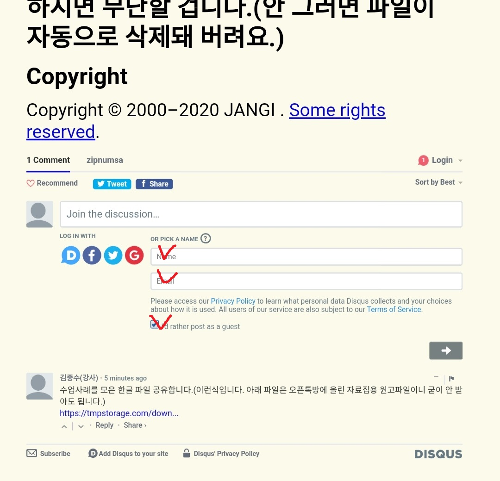

망한 수업을 위한 페이지
왜 망한 수업을 다루는가? 망한 이야기를 꺼내 놓고, 우선 위로를 받고, 다음으로 다른 사람과 함께 원인을 분석하고 대안을 마련하는 시간을 갖기 위함이다.
아래에 댓글로 어떤 수업을 어떤 의도로 기획해서 어떤 준비를 했는데 어떤 결과가 나왓는지 간략하게 써 주세요.
다른 사람의 댓글을 읽고 대댓글을 달아주세요. 서로가 서로에게 힘이 되는 공간이 되기를 바랍니다.
익명 글쓰기 가능합니다
댓글 쓰시고 체크한 부분에 아무렇게나 적으면 됩니다.

Copyright © 2000–2020 JANGI . Some rights reserved.